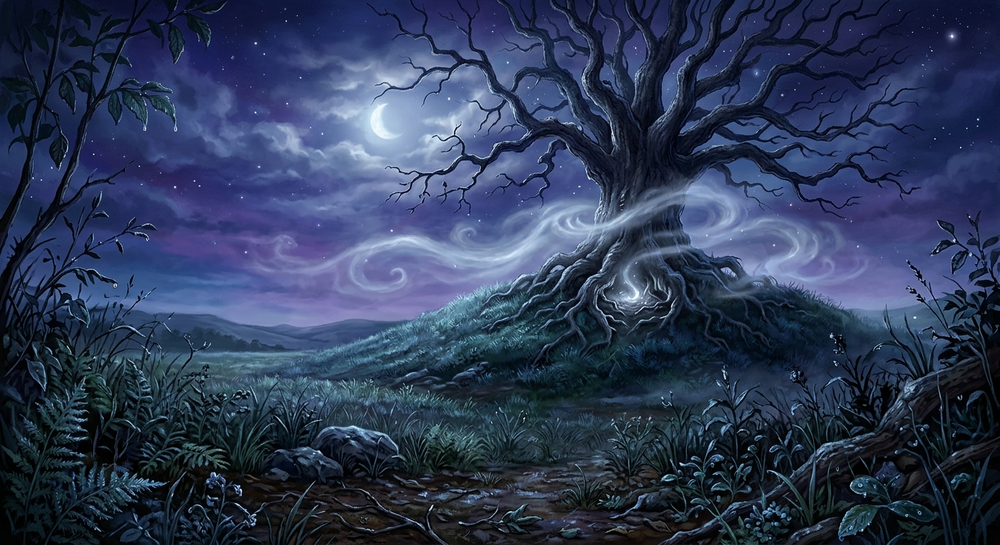

enfila son manteau et descendit l'escalier sur la pointe des pieds. La maison était silencieuse. Seul le tic-tac de l'horloge du salon rompait parfois le calme. Elle hésita une dernière fois devant la porte d'entrée. Il lui suffisait de retourner dans sa chambre. De tout oublier. De reprendre son livre. Et pourtant ses doigts se refermèrent sur la poignée.
L'air frais de la nuit l'accueillit aussitôt. Le jardin brillait encore sous les dernières gouttes laissées par la pluie. Quelque part au loin, un hibou poussa un cri bref. leva les yeux vers le ciel. La même étoile brillait toujours. Plus lumineuse à présent. Comme si elle veillait sur son chemin.
Elle referma doucement la porte derrière elle et s'engagea dans le sentier qui traversait le village. Les rues étaient désertes. Toutes les fenêtres étaient éteintes. Même les chiens du voisinage semblaient s'être tus. Ce silence n'avait rien de rassurant. Il donnait l'impression que le monde retenait son souffle.
Au détour d'une ruelle, eut soudain la certitude de ne plus être seule. Elle s'arrêta. Écouta. Rien. Seulement le léger bruissement des feuilles agitées par le vent. Pourtant, cette sensation demeurait. Quelqu'un. Ou quelque chose. L'observait.
Elle reprit sa marche, un peu plus rapidement cette fois. Au loin, la silhouette du vieux chêne commençait à se dessiner contre le ciel nocturne. Immense. Sombre. Presque irréelle. Même à cette distance, il paraissait beaucoup plus grand que dans ses souvenirs. Et tandis qu'elle l'observait, une étrange lueur argentée sembla briller un instant entre ses racines. Puis disparaître.
